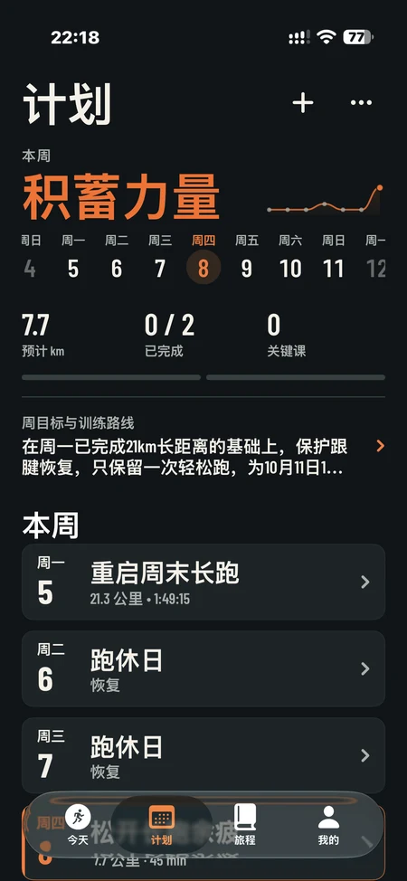
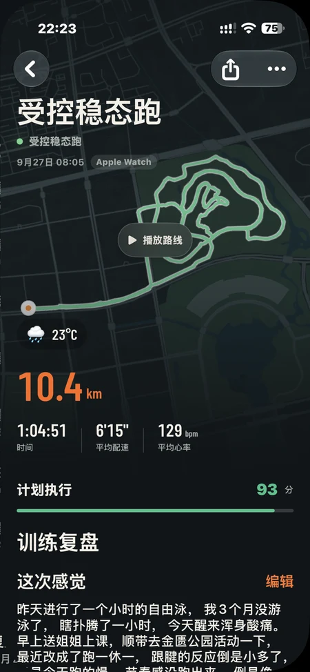

01 / TODAY
Head out with today.
Your training state, recent effort and today’s plan come together. Revisit a running memory, then make room for the next one.
- Training state and recent effort at a glance
- Today’s workout, ready when you are
- Running memories worth returning to
Your next run.
Your own rhythm.
Keep your week in view and the structure of each workout close. After the run, revisit the route, compare the effort with your plan, and write down what you learned.
- A clear view of your week and workout structure
- Review the route and how the plan unfolded
- Keep your reflections alongside each workout

